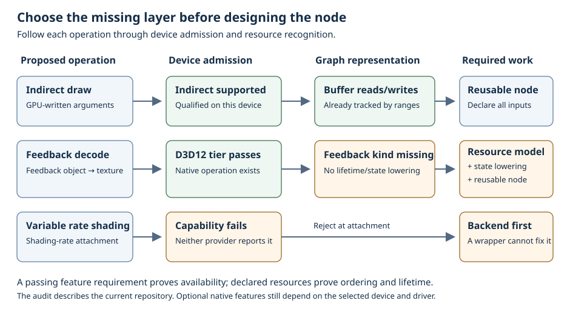

Self-contained node contracts
Reject unsupported nodes at attachment
An operation declares the hardware, features and environment it needs. The graph checks that contract before preparing a new instance and checks recognizable descriptor requirements before binding setup.
Learning objectives and prerequisites
After this chapter you can author a node's admission hook, predict when a failed attachment stops setup, distinguish an explicit requirement from inferred descriptor facts, and select a fallback without hiding dependencies. Read the typed node contract, parameter snapshots, and graph edit lifetime first.
A capability is a qualified fact about the current device, not a promise attached to a backend name. The public FArdaRHIFeatureRequirements describes portable D3D12/Vulkan needs; FArdaDependencyNodeRequirements adds CUDA and application environment checks.
Availability and resource effects are separate contracts
Admission asks whether the selected environment can perform an operation. Dependency compilation asks when its inputs are available and how long its outputs live. A ray-capable device can still receive an invalid graph that omits a TLAS dependency. Likewise, a perfectly ordered graph can request a work-graph pipeline on a provider that does not implement work graphs.
All selected requirements are conjunctive: each requested feature, minimum limit and environment predicate must pass. Within a nonempty allowed-CUDA-mode list, any one listed mode is acceptable. A false requirement flag means that the node imposes no requirement on that feature; it does not require the feature to be absent. Features used conditionally are selected from immutable public parameters.

Override the common node hook
The common TArdaDependencyNode base provides an empty GetRequirements(const FArdaParameters&). A derived class overrides the contract by declaring the same static function. This is CRTP dispatch through the concrete node type: do not add the C++ override keyword or a virtual function. The signature is checked with the other node hooks.
The compiled work-graph node header declares this hook. Its implementation is:
FArdaDependencyNodeRequirements
FArdaWorkWriteNode::GetRequirements(const FArdaParameters&)
{
FArdaDependencyNodeRequirements R;
R.mFeatures.mbRequireWorkGraphs = true;
return R;
}The renderer still only attaches the node inside an edit. With an initialized device and the recipe implementation linked, the relevant assembly is:
FArdaDependencyGraph Graph(Device);
if (auto S = Graph.BeginGraphEdit(); !S)
return S;
auto Work = Graph.AttachOrFind<FArdaWorkWriteNode>("write", {{}, 123});
if (!Work)
return Work.mStatus;
// Continue wiring Graph.FindOutput(Work.mValue, "Output") to consumers.This excerpt stops at attachment; the complete work-graph recipe wires a separate readback, compiles and executes. A qualified D3D12 work-graph device proceeds to output declaration and preparation. Vulkan currently returns Unsupported before those hooks because its provider has no work-graph implementation. The diagnostic identifies instance write, definition recipe.work-write and the missing work-graph ability.
Registering the class with FArdaWorkWriteNode::Register() remains device-independent and performs no admission check. Registration publishes the operation for discovery; each graph attachment checks its own environment.
Select requirements from public parameters
A TLAS build node needs top-level acceleration structures. Its update and compaction requirements depend on the requested build flags. Cornell's independent TLAS node implements the following hook:
FArdaDependencyNodeRequirements
FArdaCornellBuildTlasNode::GetRequirements(const FArdaParameters& P)
{
FArdaDependencyNodeRequirements R;
R.mFeatures.mbRequireAccelerationStructures = true;
R.mFeatures.mbRequireTopLevelAccelerationStructures = true;
R.mFeatures.mbRequireAccelerationStructureUpdate = HasAnyFlags(
P.mBuildFlags,
EArdaRHIAccelStructBuildFlags::AllowUpdate |
EArdaRHIAccelStructBuildFlags::PerformUpdate);
R.mFeatures.mbRequireAccelerationStructureCompaction = HasAnyFlags(
P.mBuildFlags, EArdaRHIAccelStructBuildFlags::AllowCompaction);
return R;
}Here P.mBuildFlags is part of the node's frozen public parameters and canonical identity. An ordinary build does not require update support merely because the implementation can also update. A later update still needs a compatible previously built AS and correctly declared graph accesses; passing this hook does not establish those invariants. See the ray-tracing assembly for BLAS/TLAS/trace dependencies.
The hook runs before Validate, output resolution and prepared-state construction. It receives public inputs, which may include empty output handles or invalid dimensions. Select requirements defensively; do not dereference a possibly empty resource or divide by an unchecked dimension. Leave ordinary shape and argument diagnostics to Validate. Do not rely on a compiler-filled output handle or cast parameters to the base's private prepared schema.
Two admission phases protect different boundaries
The attachment sequence is intentionally ordered. Explicit requirements prevent unsupported setup, while inference catches recognizable needs that become visible only after the node describes its operation.
- Check explicit requirements. After confirming the registered definition and public parameter type, the graph calls
GetRequirementsand checks it against its current device. This happens beforeDeclareResources,Validate,PrepareandCreateInstance. A CUDA-kind attachment with a real device also requires a qualified CUDA launch path. - Resolve outputs and identity.
DeclareResourcesfills or validates logical outputs. The graph computes canonical identity. A matching existing node is checked again using its retained requirements and returned without running new preparation. - Prepare a new instance. The class base validates public parameters, obtains immutable device state and creates per-instance state. It then calls
Describe. - Check inferred requirements. The graph combines explicit requirements with recognized pipeline, binding and resource facts. With a device, it checks that set before generating graph binding layouts or inserting the node. A failed check removes provisional output declarations from this attachment.
- Compile and execute later. A successful attachment retains its description.
EndGraphEditcompiles dependencies, allocation and PSOs and prepares per-frame bindings/tables. Execution submits the compiled program.
The retained FArdaDependencyNodeDesc::mRequirements is graph-populated output. Do not assign explicit requirements to it in Describe: attachment replaces that field with the hook's result before inference. Put author requirements in the hook so they also protect early setup.
Admission itself is read-only CPU work and issues no GPU submission or wait. Inference can prevent graph binding creation, but it happens after node preparation; declare a feature explicitly if it must be checked before compiling that feature's shader or constructing its device state. Successful attachment is not the final validation of native resource formats, pipeline combinations, memory capacity or execution inputs.
One class contract for registration and attachment
Typed attachment delegates to the common class base. Attachment by registered name looks up the same class executable and checks the same public parameter type. Explicit requirements are selected from the new parameter snapshot on every call, including matching reattachments.
Override GetRequirements(const FArdaParameters&) on the node class. For example, a node whose public parameters include mSampleCount can select its required descriptor capacity:
static FArdaDependencyNodeRequirements GetRequirements(const FArdaParameters& Parameters)
{
FArdaDependencyNodeRequirements Requirements;
Requirements.mFeatures.mMinResourceDescriptors = Parameters.mSampleCount;
return Requirements;
}Built-ins, application operations and CUDA operand adapters all follow this contract. The registry's executable records are framework-owned inspection data. Their constructors and registration function are private; applications cannot submit arbitrary callback records. Device preparation and instance storage are retained by the base, without a separate public execution schema.
Include every behavior-affecting parameter in the canonical key. A cached successful attachment on another device or with another parameter value is not an admission verdict for this call.
What descriptor inference can recognize
Inference examines declarations, not callback instructions or shader source. It recognizes graphics/mesh queue needs, mesh and work-graph families, ray pipeline/table use, geometry/tessellation stages, stages seeded in complete configurations, and ray configurations that permit opacity micromaps. It recognizes AS accesses, indirect argument states, shading-rate states, texture copy/resolve states and virtual/tiled resource descriptions. This closes admission holes for declared operations without requiring each author to repeat every obvious flag.
For bindless layouts, inference distinguishes resource and sampler direct indexing, runtime/unbounded arrays, update-after-bind, variable counts, descriptor buffers and capacities. It also checks whether a table needs partially bound descriptors. A table whose supplied entries are dense below its chosen size can still have holes in the full fixed layout extent; multiple banks can retain fixed extents even when one binding is variable. The relevant fact is the native declared extent, not merely the number of supplied entries.
Inference does not discover inline ray queries, native float16/int8 instructions, library versions, external algorithm constraints or all accesses hidden behind a GPU-selected index. Declare such needs explicitly. A declared indirect argument state establishes general indirect-command admission; indirect ray dispatch also needs the separate indirect-ray requirement. The provider's local shader-table payload capability does not guarantee every local descriptor model: Vulkan still requires its qualified direct-heap path for local descriptors.
A recognized capability is not a new executable operation. Sparse capability inference does not make the memory planner support tiled storage, and an opacity-micromap state does not add a missing graph micromap handle. The modularity summary explains these boundaries.
CUDA and application environment checks
CUDA uses the device's separate FArdaCudaCapabilities snapshot. PixelSort's surface operand explicitly returns both CUDA launch and CUDA surface requirements:
FArdaDependencyNodeRequirements
FArdaPixelSortSortNode::GetRequirements(const FArdaParameters&)
{
FArdaDependencyNodeRequirements R;
R.mbRequireCuda = true;
R.mbRequireCudaSurfaces = true;
return R;
}A buffer-only CUDA operation should not add the surface requirement. Layered surfaces have their own requirement, and minimum architecture, threads per block and dynamic shared memory can further constrain admission. A nonempty mAllowedCudaLaunchModes admits only those qualified modes. Leave it empty to accept any available framework mode; None is invalid as an allowed mode. Surface failure can coexist with a working buffer launch path. The hook does not create a CUDA context, change the selected mode, convert a surface kernel to a buffer kernel, or prove binary/capture compatibility.
The TArdaCudaOperandNode class specialization supplies this admission hook automatically. It checks CUDA launch support, surface use in the parameter schema, exact device identity and the operand's read-only GetOperandSupport() result, including native variant/library compatibility. Resource-dependent kernel selection still waits for physical resources during compilation. A wrong-device operand returns an unsupported-attachment diagnostic; it is not silently rebound to the graph's device.
For an application library, plugin version, driver qualification or another condition not represented by portable capabilities, add a named FArdaDependencyEnvironmentRequirement to mEnvironment. Its callback receives a borrowed const IArdaRHIDevice& and returns a status. Return success when the application condition is satisfied; otherwise return a useful reason. The graph combines that reason with the predicate name and other missing abilities.
Both requirement selection and predicates must be read-only: do not allocate GPU resources, load or initialize a mutable global service, submit commands, wait for the GPU, retain the borrowed device, or mutate external state. Query stable, already established environment facts. Predicates may be evaluated more than once during an attachment or matching reattachment, so do not make them consume state. Admission occurs on attachment, not before every execution; the application must keep required libraries and device state valid for retained nodes.
Unknown limits, queue fallback and device-free analysis
An explicit positive minimum must be proved by the reported limit. Zero for an unavailable or unqueryable capability limit is not treated as unlimited. For example, an explicit positive ray-payload minimum fails when the device cannot report that limit. Inferred ray configuration checks defer an unqueryable native payload limit to actual pipeline creation instead of inventing support. Choose explicit constraints only when the algorithm truly requires them and the environment can establish them.
The subgroup-width interval is a conservative constraint on the whole reported device interval. Requiring 32 through 32 does not request a 32-lane mode; it accepts only a device whose qualified subgroup interval fits entirely within 32 through 32. A device reporting 32 through 64 therefore fails. If an operation can tolerate both widths, state that range and make the shader correct for both.
A compute node does not automatically require a dedicated compute queue, and a copy node does not automatically require a dedicated copy queue. ArdaInductor retains its normal queue placement and fallback, including compute/copy work on graphics when appropriate. Explicitly requiring a dedicated family turns a scheduling preference into a hard admission condition. Only do that when the operation depends on it. Queue availability and dedicated-family identity still do not guarantee simultaneous hardware execution.
A graph constructed without a device can perform device-independent semantic analysis when its explicit requirement set is empty and its other hooks need no device. Nonempty explicit feature, CUDA or environment requirements still fail; unavailable facts are never assumed supported. Descriptor-inferred requirements are retained but are not enforced without a device. This exception supports graph analysis, not GPU execution. Device-dependent shader or binding preparation may independently reject a device-free graph, so a normal prepared rendering node is not automatically suitable for that mode.
Failure, rollback and retry
Unsatisfied portable features, CUDA requirements and custom environment checks return an aggregated Unsupported status. The graph prefixes the diagnostic with the instance name and registered definition, making it possible to identify the operation in a large library. An empty predicate name, missing predicate function or invalid CUDA mode declaration is a malformed contract and returns InvalidArgument.
An early explicit rejection happens before output declaration and preparation. A later inferred rejection can occur after preparation, but no node is inserted and provisional graph outputs from that attachment are rolled back. The edit stays open for repair or cancellation. A failed reattachment does not delete the existing node or replace its parameters. Rollback cannot undo arbitrary external side effects performed by an author's hooks, which is why those hooks must follow their side-effect rules.
Respond to an unsupported feature by selecting a compatible node or parameter variant, supplying a correctly qualified device, or cancelling the edit. Do not continue using an invalid returned handle. Failed checks are not cached as permanent rejection. Repeating attachment re-evaluates the current requirements and environment; matching successful nodes continue to reuse prepared state. The graph does not automatically downgrade an algorithm or choose an unrelated fallback implementation.
Three common authoring errors are particularly misleading:
- Requirements only in
Describe().mRequirements: the graph overwrites this output field. Move explicit requirements intoGetRequirements. - Feature discovery inside
Record: the node has already attached and may be part of accepted work. Move stable admission to the hook while keeping operation-specific runtime validation where needed. - Omitted resources after a passing capability check: support does not establish dependencies. Declare indirect arguments, every possible bindless target and external-library workspace/effects.
Which native features still need modular work
The accompanying repository source audit maps every exposed capability group to its current integration level. That Markdown document links implementation evidence in the repository; this HTML chapter and the linked API contracts provide the admission workflow without requiring source access.
- Already automatically represented: ordinary buffer/texture resources, shader bindings, bounded bindless declarations, shader parameters, graphics/compute/mesh/ray/work pipeline requests, ray tables, range hazards, supported queue transitions and ordinary transient allocation. CUDA operands expose their declared data effects and are coalesced into framework sequences.
- Existing resource model, missing generic operations: indirect draw/dispatch/rays, texture-to-texture copy, resolve and texture clears. AS imports and Cornell's AS operation nodes exist, but general node-owned AS construction and a public build/update/compaction library remain incomplete.
- Missing resource/effect models: sampler feedback, opacity micromaps, sparse mappings/residency, versioned resource collections and general external synchronization. Retaining a native object inside an opaque callback does not make its effects recognizable.
- Incomplete parameter paths: automatic ray-local bindless descriptors and their index/address relocation. Vulkan's direct-heap local descriptor restriction remains relevant even when local shader-table arguments are reported.
- Backend work is still required: VRS and conservative rasterization are not reported by either provider; Vulkan work graphs/feedback and D3D12 OMM are unsupported. Shader bundles are facade iteration over compute/mesh records, not a native work graph that ArdaInductor expands automatically.
Use the diagram's decision process for a new operand: first establish native availability, then confirm the graph can represent every resource and effect, then package a reusable operation. Feature admission improves the first step and catches recognizable requirements; it does not silently claim completion of the other two.
Summary and checkpoints
Requirements belong to the operation's public contract. Static hook dispatch provides the same contract for every built-in, application node and operand adapter. The graph checks explicit needs before setup, infers visible descriptor needs before graph binding preparation, and preserves normal dependency, lifetime and backend validation.
- A work-graph node has an explicit hook. Which hooks run before Vulkan rejects it? Requirement selection runs; output declaration, validation and preparation do not.
- A node's description requests a mesh pipeline but its explicit hook is empty. Can preparation already have run before rejection? Yes. Declare mesh support explicitly to protect that earlier setup.
- The same node was admitted earlier, but its named environment predicate now fails. Does
AttachOrFindreuse it successfully? No. It reports failure while preserving the existing node. - A device-free graph has empty explicit requirements and describes a ray pipeline. Are inferred requirements discarded? No. They are retained without device enforcement; other hooks must still support device-free analysis.
- Two descriptors index different slots that overlap the same bytes. Can their writers run independently after admission succeeds? No. Hazard analysis resolves the underlying views.
Further reading
Continue with complete node recipes, resource versioning and ranges, ArdaInductor scheduling, and execution and retirement. Inspect the canonical requirement-check contract, portable feature evaluation, and environment predicate contract for exact fields, errors and lifetime rules.